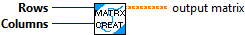
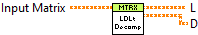
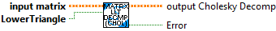

Assign a matrix of a given size and start position.
Inputs:
- input matrix -- The input matrix
- other -- The matrix to assign the block to.
- startingRow -- The row to start at.
- startingCol -- The column to start at.
Outputs:
- output matrix -- Resulting matrix

Extracts a matrix of a given size and start position with new underlying storage.
Inputs:
- input matrix -- The input matrix
- Rows -- Number of rows to extract.
- Columns -- Number of columns to extract.
- startingRow -- The starting row of the extracted matrix.
- startingCol -- The starting column of the extracted matrix.
Outputs:
- output matrix -- The extracted matrix.

Constructs an empty zero matrix of the given dimensions.
Inputs:
- rows -- The number of rows of the matrix.
- columns -- The number of columns of the matrix.
Outputs:
- output matrix -- Newly created matrix

Returns the diagonal elements inside a vector or square matrix.
If "this" Matrix is a vector then a square matrix is returned. If a "this" Matrix}is a matrix then a vector of diagonal elements is returned.
Inputs:
- input matrix -- The input matrix
Outputs:
- output matrix -- The diagonal elements inside a vector or a square matrix.

Computes the sum of all the elements in the matrix.
Inputs:
- input matrix -- The input matrix
Outputs:
- Sum -- Sum of all the elements.

Computes the matrix exponential using Eigen's solver. This method only works for square matrices, and will otherwise throw an MatrixDimensionException.
Inputs:
- input matrix -- The input matrix
Outputs:
- output matrix -- The exponential of A.
- error -- If TRUE, an error occured.

Extracts a given column into a column vector with new underlying storage.
Inputs:
- input matrix -- The input matrix
- column -- The column to extract a vector from.
Outputs:
- output matrix -- A column vector from the given column.
- error -- If TRUE, an error occured.

Extracts a submatrix from the supplied matrix and inserts it in a submatrix in "this". The shape of "this" is used to determine the size of the matrix extracted.
Inputs:
- input matrix -- The input matrix
- startingRow -- The starting row in the supplied matrix to extract the submatrix.
- startingCol -- The starting column in the supplied matrix to extract the submatrix.
- other -- The matrix to extract the submatrix from.
Outputs:
- output column -- the column matrix resulting from the extraction

Extracts a given row into a row vector with new underlying storage.
Inputs:
- input matrix -- The input matrix
- row -- The row to extract a vector from.
Outputs:
- output row -- A row vector from the given row.
- error -- If TRUE, an error occured.

Sets all the elements in "this" matrix equal to the specified value.
Inputs:
- input matrix -- The input matrix
- value -- The value each element is set to.
Outputs:
- output matrix -- resulting matrix

Creates the identity matrix of the given dimension.
Inputs:
- size -- The dimension of the desired matrix.
Outputs:
- output matrix -- The DxD identity matrix.
- error -- If TRUE, an error occured.

Checks if another {@link Matrix} is equal to "this" within a specified tolerance.
This will check if each element is in tolerance of the corresponding element from the other Matrix.
Inputs:
- input matrix -- The input matrix
- other -- The matrix to check against this one.
- tolerance -- The tolerance to check equality with. (Default is 1E-6)
Outputs:
- equal -- true if this matrix is equal to the one supplied.

This VI computes the square root free Cholesky factorization
A=L*D*L'
Where L is a lower triangular matrix with ones on the diagonal, and D is a diagonal matrix.
It is assumed that A is symmetric and postive definite.
Reference: Golub and Van Loan, "Matrix Computations", second edition, p 137.
it is based in the work made by Brian Borchers (borchers@nmt.edu) in MATLAB.
Created by Davis Montenegro
10-05-2013
Inputs:
- Matrix -- Matrix to decoompose
Outputs:
- L -- L matrix
- D -- D matrix

Decompose "this" matrix using Cholesky Decomposition. If the "this" matrix is zeros, it will return the zero matrix.
Inputs:
- input matrix -- The input matrix
- lowerTriangular -- Whether or not we want to decompose to the lower triangular Cholesky matrix.
Outputs:
- output Cholesky Decomp -- The decomposed matrix.
- error -- If TRUE, an error occured. For example if the matrix could not be decomposed(ie. is not positive semidefinite.

Computes the Frobenius normal of the matrix.
normF = Sqrt{ sum; i=1: m sum; j=1:n ( a[i,j] ^2 ) )
Inputs:
- input matrix -- The input matrix
Outputs:
- NormF -- Double containing the frobenius normal value of this matrix
- Error -- If TRUE, an error occured.

Computes the matrix power using Eigen's solver. This method only works for square matrices, and will otherwise throw an MatrixDimensionException.
Inputs:
- input matrix -- The input matrix
- exponent -- The exponent.
Outputs:
- output matrix -- The exponential of A.
- error -- If TRUE, an error occured.
- ExponentNotRational -- TRUE if exponent is not a rational number.

This VI is used to replace an array inside a matrix where the array has a smaller size than the rows of the matrix.
Created by Davis Montenegro
10-05-2013

Sets a column to a given column vector.
Inputs:
- input matrix -- The input matrix
- column -- The column to set.
- val -- The column vector to set the given row to.
Outputs:
- output matrix -- the resulting matrix
- error -- If TRUE, an error occured.

Sets a row to a given row vector.
Inputs:
- input matrix -- The input matrix
- row -- The row to set.
- val -- The row vector to set the given row to.
Outputs:
- output matrix -- resulting matrix
- error -- If TRUE, an error occured.

Transpose matrix
Inputs:
- input matrix -- The input matrix
Outputs:
- output matrix -- The transposed matrix

Determines if all the values are within the given tolerance.
Tolerance is defined as:
IF ( MAX( ABS(A), ABS(B) ) ) > 1E-20 THEN
ABS( A - B ) / MAX( ABS(A), ABS(B) )
ELSE
TRUE
END IF
Inputs:
- Matrix A -- First input matrix
- Matrix B -- Second input matrix
- Tolerance -- Tolerance value, optional (default: 1.0E-9 )
Outputs:
- Within Tolerance -- Set to true if all values are within tolerance.
- Error -- Returns TRUE if an errror occured (matrices are not the same size.)